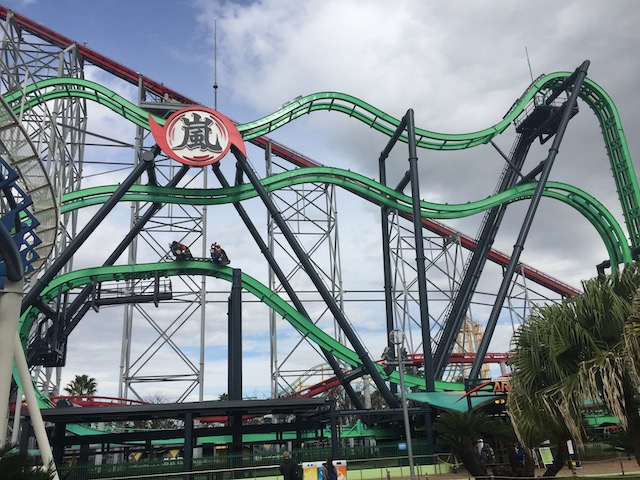
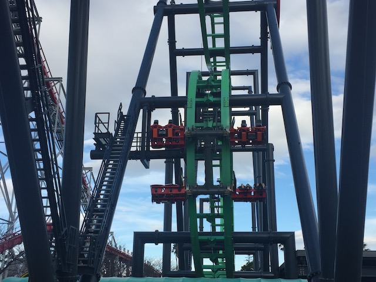
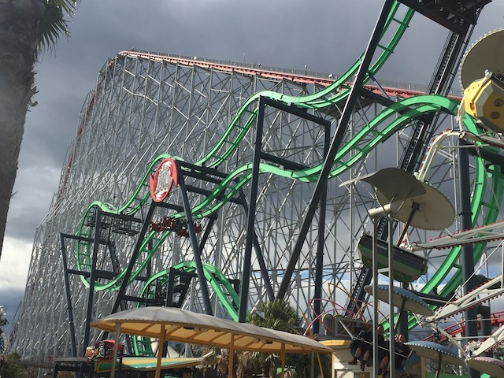
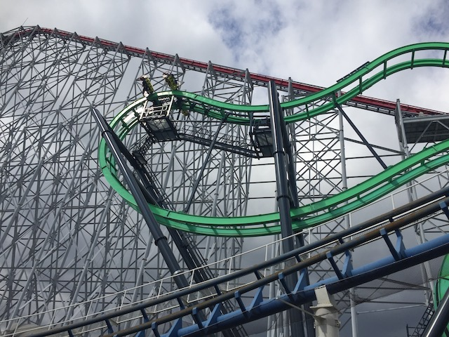
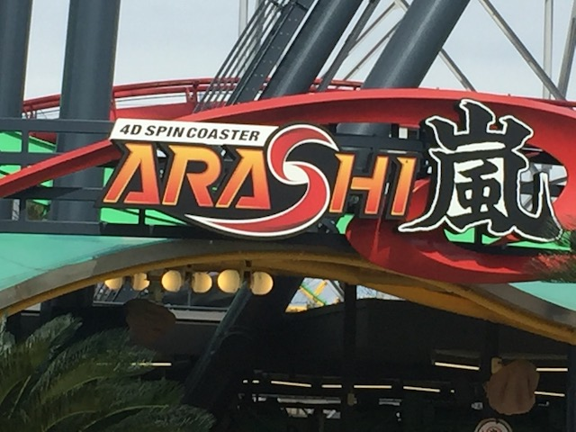

| |
Arashi Review

We're here at Nagashima Spaland. Today's ride we'll be reviewing for you is Arashi. Now at first glance, this may not look like anything special. I mean....it's an S&S Free Spin. They're damn near everywhere these days. I mean, Six Flags has gone crazy with building these things. Why should I care about the one here? Well, let me tell you a little something about Arashi. This is BY FAR, the best S&S Free Spin. It's not even close. And on top of that, it's just INSANE!!! And I'm not just saying that this ride is crazy (It is). I'm saying that this is the Japanese equivelant of Insane @ Gröna Lund. Yeah. It's THAT kind of ride. So yeah. Let's hop in the cars, pull down the awkward rubber vest OTSRs, and off we go! We head up the lifthill, and....we don't flip that much. You're generally rightside up. But don't worry. Things will get crazy soon enough. We get a great view of Nagashima Spaland going up the lifthill (particuarlly of Steel Dragon). But before we get too much into it, we crest the lifthill, and....HOLY SH*T!!!! WE JUST START FLIPPING LIKE CRAZY!!!! OH MY F*CKING GOD!!! WE JUST KEEP FLIPPING AND FLIPPING AND FLIPPING THROUGH THESE LITTLE HILLS AT THE TOP!!! Seriously, I think I counted 10 flips in a row straight up here. Some people might complain, saying that this is too intense. BOO!!! PUSSIES!!! THE CONSTANT FLIPPING IS AWESOME!!! It's so crazy that I freaking grabbed my harness in an "OH SH*T!!!" moment. We then head into one of those funky drops, and....yeah. It's better on Insane. But...just look how much we flipped up there! No big deal! We then go through a couple small little hills. And....there's some crazy flips there too. GOD DAMN!!! IT NEVER STOPS!!! We go down another one of those funky drops, flip some more, rise up, and head into the brake run. GOD DAMN!!! That thing just gave us 16 flips in one ride! Sure, that was my best ride, but I don't think I ever got less than 8 rides on a ride on this thing. It is just CRAZY!!! And it really makes me sad that all the American ones are so weak in comparison. I hope another one of these winds up being like Arashi and not like all the American ones. Because...this ride is F*CKING CRAZY!!! Easily my favorite ride at Nagashima Spaland (Pre-Hakugei)!
9/10
Location: Nagashima Spaland
Opened: 2017
Built by: S&S Power
Last Ridden: October 31, 2018
I have ridden this exact same ride at the following parks.
Six Flags Discovory Kingdom
Six Flags Great Adventure
Six Flags Mexico
Six Flags New England
Arashi Photos




Home
|